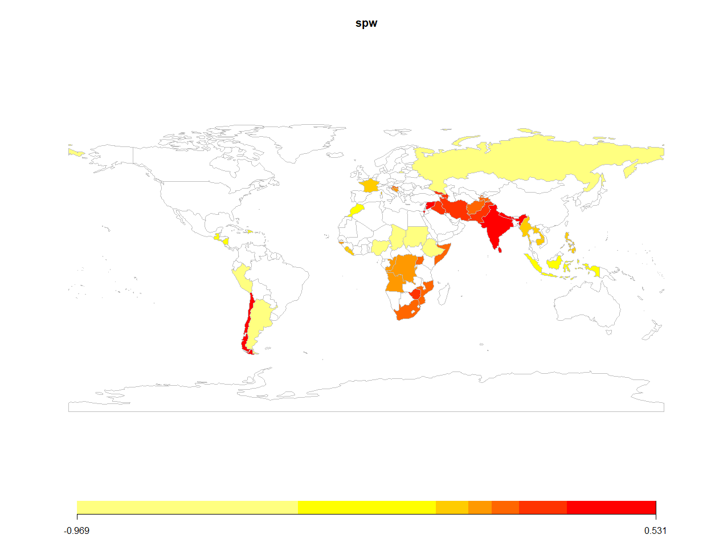
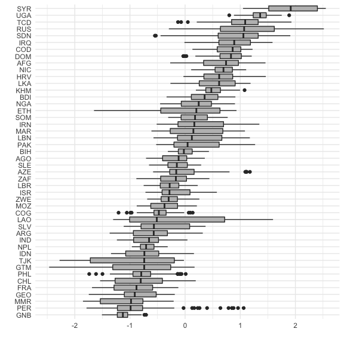

Description
Parametric spatial split-population (SP) survival models for clustered event processes. The models account for both structural and spatial heterogeneity among “at risk” and “immune” populations, and incorporates time-varying covariates. This package currently implements Weibull, Exponential and Log-logistic forms for the duration component, and includes functions for a series of diagnostic tests and plots to easily visualize autocorrelation, convergence and spatial effects. The user can also create their own spatial weights matrix based on their units and adjacencies of interest, making the use of these models flexible and broadly applicable to a variety of research areas.
Installation
The latest version of the package (0.1.1) is available on CRAN R:
install.packages("BayesSPsurv")
To install the development version from GitHub:
if (!require("remotes")) install.packages("remotes") remotes::install_github("Nicolas-Schmidt/BayesSPsurv")
Functions
| Function | Description |
|---|---|
spatialSPsurv |
Markov Chain Monte Carlo (MCMC) to run time-varying Bayesian split population survival model with spatial frailties. |
exchangeSPsurv |
Markov Chain Monte Carlo (MCMC) to run Bayesian split population survival model with exchangeable frailties. |
pooledSPsurv |
Markov Chain Monte Carlo (MCMC) to run Bayesian split population survival model with no frailties. |
plot_JointCount |
Conducts Join Count tests to assess spatial clustering or dispersion of categorical variables in the data. |
plot_Moran.I |
Implements Global Moran I test to evaluate spatial autocorrelation in units’ risk propensity in the data. |
summary |
Returns a summary of exchangeSPsurv, pooledSPsurv or spatialSPsurv object via coda::summary.mcmc. |
spatial_SA |
Generates a spatial weights matrix with units and adjacencies defined by the user. |
SPstats |
A function to calculate the deviance information criterion (DIC) and Log-likelihood for fitted model oupUts. |
Data
We illustrate the functionality of BayesSPsurv using data from Walter
(2015) that is included and described in the package.
Bayesian Spatial Split-Population (SP) Survival Model
spatialSPsurv estimates the Bayesian Spatial split-population survival (cure) model, which includes not only time-varying covariates but also spatially autocorrelated frailties in the model’s split and survival stage. To allow for easy replication, the examples below run a low number of iterations (N).
spatialSPsurv Weibull model with N = 15,000 is here.
spatialSPsurv Log-Logistic model with N = 15,000 is here.
library(BayesSPsurv) ## Data walter <- spduration::add_duration(Walter_2015_JCR,"renewed_war", unitID = "ccode", tID = "year", freq = "year", ongoing = FALSE) #> Registered S3 method overwritten by 'quantmod': #> method from #> as.zoo.data.frame zoo walter <- BayesSPsurv::spatial_SA(data = walter, var_ccode = "ccode", threshold = 800L) set.seed(123456) model <- spatialSPsurv( duration = duration ~ fhcompor1 + lgdpl + comprehensive + victory + instabl + intensityln + ethfrac + unpko, immune = cured ~ fhcompor1 + lgdpl + victory, Y0 = 't.0', LY = 'lastyear', S = 'sp_id' , data = walter[[1]], N = 500, burn = 10, thin = 10, w = c(1,1,1), m = 10, form = "Weibull", prop.var = 1e-05, A = walter[[2]] ) print(model) #> Call: #> spatialSPsurv(duration = duration ~ fhcompor1 + lgdpl + comprehensive + #> victory + instabl + intensityln + ethfrac + unpko, immune = cured ~ #> fhcompor1 + lgdpl + victory, Y0 = "t.0", LY = "lastyear", #> S = "sp_id", A = walter[[2]], data = walter[[1]], N = 500, #> burn = 10, thin = 10, w = c(1, 1, 1), m = 10, form = "Weibull", #> prop.var = 1e-05) #> #> #> Iterations = 1:49 #> Thinning interval = 1 #> Number of chains = 1 #> Sample size per chain = 49 #> #> Empirical mean and standard deviation for each variable, #> plus standard error of the mean: #> #> #> Duration equation: #> Mean SD Naive SE Time-series SE #> (Intercept) 1.00814151 1.08126022 0.15446575 0.43017597 #> fhcompor1 -0.86040095 0.51570840 0.07367263 0.09154776 #> lgdpl 0.01516985 0.11875675 0.01696525 0.05333867 #> comprehensive -0.75590604 0.31156314 0.04450902 0.03266632 #> victory 0.47751228 0.37117992 0.05302570 0.02824285 #> instabl 0.74508684 0.47644646 0.06806378 0.06806378 #> intensityln 0.13956073 0.09491131 0.01355876 0.02921604 #> ethfrac 0.10052477 0.52692819 0.07527546 0.07527546 #> unpko 0.67711562 0.65094311 0.09299187 0.07259810 #> #> Inmune equation: #> Mean SD Naive SE Time-series SE #> (Intercept) -2.224744 4.336817 0.6195454 1.1667720 #> fhcompor1 1.250456 3.846270 0.5494671 0.8986669 #> lgdpl -2.313382 2.307048 0.3295783 0.3295783 #> victory 1.689145 3.135734 0.4479620 0.6556410 SPstats(model) #> $DIC #> [1] -7501.048 #> #> $Loglik #> [1] 23338.27 # ~~~~~~~~~~~~~~~ # Choropleth Map # ~~~~~~~~~~~~~~~ spw <- matrix(apply(model$W, 2, mean), ncol = 1, nrow = ncol(model$W)) ccode <- colnames(model$W) ISO3 <- countrycode::countrycode(ccode,'gwn','iso3c') spw <- data.frame(ccode = ccode, ISO3 = ISO3, spw = spw) map <- rworldmap::joinCountryData2Map(spw, joinCode = "ISO3", nameJoinColumn = "ISO3") #> 46 codes from your data successfully matched countries in the map #> 0 codes from your data failed to match with a country code in the map #> 197 codes from the map weren't represented in your data rworldmap::mapCountryData(map, nameColumnToPlot = 'spw')

Bayesian Exchangeable Split-Population (SP) Survival Model
This model includes nonspatial unit-specific i.i.d frailties in the model’s split-stage (Vi) and survival stage (Wi) as well as time-varying covariates in each of these two stages.
exchangeSPsurv Weibull model with N = 15,000 is here.
exchangeSPsurv Log-Logistic model with N = 15,000 is here.
walter <- spduration::add_duration(Walter_2015_JCR,"renewed_war", unitID = "ccode", tID = "year", freq = "year", ongoing = FALSE) walter$S <- rep(x = 1:length(unique(walter$ccode)), times = rle(walter$ccode)$lengths) country <- countrycode::countrycode(unique(walter$ccode),'gwn','iso3c') set.seed(123456) model <- exchangeSPsurv( duration = duration ~ fhcompor1 + lgdpl + comprehensive + victory + instabl + intensityln + ethfrac + unpko, immune = cured ~ fhcompor1 + lgdpl + victory, Y0 = 't.0', LY = 'lastyear', S = 'S' , data = walter, N = 500, burn = 10, thin = 10, w = c(1,1,1), m = 10, form = "loglog", prop.var = 1e-05, id_WV = country ) library(ggplot2) w_country <- tidyr::pivot_longer(as.data.frame(model$W), cols = 1:ncol(model$W)) ggplot(w_country, aes(x = reorder(factor(name), value, FUN = median), y = value)) + geom_boxplot(fill = 'gray') + coord_flip() + theme_minimal() + labs(x = "", y = "")

Bayesian Pooled Split-Population (SP) Survival Model
Bayesian SP survical model without unit-specific i.i.d frailties.
pooledSPsurv Weibull model with N = 15,000 is here.
pooledSPsurv Log-Logistic model with N = 15,000 is here.
set.seed(123456) model <- pooledSPsurv( duration = duration ~ fhcompor1 + lgdpl + comprehensive + victory + instabl + intensityln + ethfrac + unpko, immune = cured ~ fhcompor1 + lgdpl + victory, Y0 = 't.0', LY = 'lastyear', data = walter, N = 500, burn = 10, thin = 10, w = c(1,1,1), m = 10, form = "Weibull" ) print(model) #> Call: #> pooledSPsurv(duration = duration ~ fhcompor1 + lgdpl + comprehensive + #> victory + instabl + intensityln + ethfrac + unpko, immune = cured ~ #> fhcompor1 + lgdpl + victory, Y0 = "t.0", LY = "lastyear", #> data = walter, N = 500, burn = 10, thin = 10, w = c(1, 1, #> 1), m = 10, form = "Weibull") #> #> #> Iterations = 1:49 #> Thinning interval = 1 #> Number of chains = 1 #> Sample size per chain = 49 #> #> Empirical mean and standard deviation for each variable, #> plus standard error of the mean: #> #> #> Duration equation: #> Mean SD Naive SE Time-series SE #> (Intercept) 2.3748909 1.38333158 0.19761880 0.64033808 #> fhcompor1 -0.9225435 0.62636551 0.08948079 0.13530712 #> lgdpl -0.1006686 0.12871863 0.01838838 0.05205719 #> comprehensive -0.8376250 0.40244531 0.05749219 0.05749219 #> victory 0.3702996 0.44200695 0.06314385 0.06314385 #> instabl 0.8792065 0.55504640 0.07929234 0.07929234 #> intensityln 0.1185066 0.09089489 0.01298498 0.02403753 #> ethfrac -0.3734596 0.71246591 0.10178084 0.13237277 #> unpko 0.5947845 0.60326265 0.08618038 0.08618038 #> #> Inmune equation: #> Mean SD Naive SE Time-series SE #> (Intercept) 0.01876845 2.163802 0.3091146 0.4111774 #> fhcompor1 1.25950280 3.002383 0.4289118 0.6366892 #> lgdpl -1.86099795 1.670992 0.2387131 0.2986771 #> victory -0.24415725 2.435839 0.3479770 0.3479770